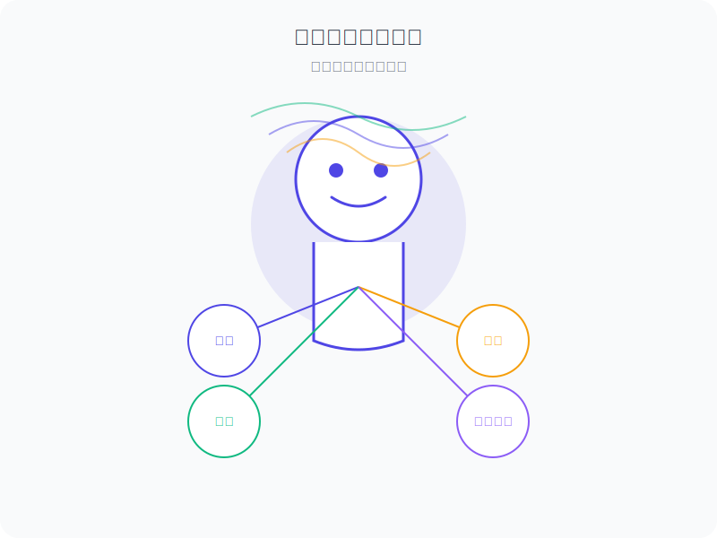

角色设定的重要性
在语音交互系统中，角色设定（Persona）不仅仅是一种装饰，而是影响用户体验的核心要素。一个精心设计的角色能够：
- 建立情感连接，增强用户信任感
- 提供一致性的交互体验
- 塑造品牌形象，增强产品辨识度
- 使技术更加人性化，降低使用门槛
- 提升用户满意度和忠诚度
角色设定的核心要素
一个完整的语音助手角色设定应包含以下核心要素：
人格特质
定义语音助手的性格特点，影响其回应方式和表达风格。
维度示例：
- 专业 vs. 随和
- 严肃 vs. 幽默
- 简洁 vs. 详细
- 正式 vs. 轻松
- 保守 vs. 创新
语言风格
定义语音助手的表达方式、用词选择和语气。
要素示例：
- 称谓选择（如使用"您"还是"你"）
- 句式偏好（如简短句还是复杂句）
- 专业术语使用程度
- 修辞手法（如是否使用比喻、夸张等）
- 情感表达方式（如使用感叹词、情感词汇）
背景故事
为语音助手创建一个背景故事，增强其人格的连贯性和可信度。
元素示例：
- 角色来源或"出生"背景
- 角色的"成长"经历
- 角色的价值观和使命
- 角色的专长和兴趣
- 角色与用户的关系定位
声音特性
定义语音助手的声音特点，包括音色、语速、语调等。
参数示例：
- 音色（如温暖、清脆、低沉、明亮）
- 语速（如快速、中等、从容）
- 语调变化（如平稳、富有变化）
- 重音模式（如强调关键词的方式）
- 停顿习惯（如句间停顿的长度和频率）
交互原则
定义语音助手在交互过程中遵循的行为准则和原则。
原则示例：
- 主动性程度（如何主动提供信息或建议）
- 错误处理方式（如何承认和纠正错误）
- 隐私保护态度（如何处理敏感信息）
- 情感回应策略（如何回应用户的情绪）
- 学习适应能力（如何根据用户习惯调整）
角色设定的实现方法
将角色设定有效地融入语音交互系统需要采用以下方法：
1
角色设计文档
创建详细的角色设计文档，明确定义角色的各个方面，为开发团队提供一致的参考标准。
2
回复模板库
建立符合角色特性的回复模板库，确保系统在不同情境下的回应都能保持一致的风格。
3
语音合成调优
根据角色的声音特性要求，调整语音合成引擎的参数，使生成的语音符合角色设定。
4
角色一致性测试
设计测试用例，评估系统在各种场景下是否能保持角色的一致性，并根据测试结果进行调整。
5
用户反馈迭代
收集用户对角色的反馈，了解用户的接受度和喜好，并据此迭代优化角色设定。
家庭助手角色案例
以下是一个为智能家居系统设计的"温暖可靠的家庭助手"角色案例：

小智 - 家庭智能助手
您家中温暖可靠的智慧伙伴
核心特质
智能
温暖
可靠
理解力强
贴心
语言风格
- 使用"您"作为尊称，体现尊重
- 语句简洁明了，避免过长表达
- 使用温暖亲切的词汇，如"好的"、"没问题"
- 避免过于技术化的术语，使用通俗易懂的表达
- 适当使用礼貌用语，如"请"、"谢谢"、"不客气"
回应示例
执行指令时
"好的，已为您打开客厅的灯。"
提供信息时
"现在室外温度是26度，天气晴朗。"
无法理解指令时
"抱歉，我没有完全理解您的意思。请问您是想要...?"
提供建议时
"您可能还需要打开空调，现在室内温度有点高。"
交互原则
- 优先满足用户明确表达的需求
- 在适当时机提供贴心建议，但不过度干预
- 承认错误并主动寻求澄清
- 保持适度的主动性，不打扰用户
- 记住用户习惯，提供个性化服务
- 严格保护用户隐私，不随意分享敏感信息
角色设定的效果评估
评估角色设定的效果需要考虑以下几个方面：
用户接受度
评估用户对角色的喜爱程度和接受度，包括：
- 用户满意度调查
- 用户主动与助手交互的频率
- 用户对助手的情感评价
- 用户对助手的拟人化程度
品牌一致性
评估角色是否与品牌形象保持一致，包括：
- 角色表现与品牌价值观的契合度
- 角色语言风格与品牌调性的一致性
- 用户对品牌认知的增强程度
交互效率
评估角色设定是否提升了交互效率，包括：
- 用户完成任务的时间
- 交互轮次的减少
- 用户理解助手回应的准确度
- 用户对助手指令的清晰度
长期关系建立
评估角色是否有助于建立长期的用户关系，包括：
- 用户使用持续性
- 用户推荐意愿
- 用户对助手的信任度
- 用户对助手的情感依赖程度
角色设定优化建议
- 目标用户调研： 深入了解目标用户群体的需求、喜好和价值观，设计更符合用户期望的角色
- 角色一致性管理： 建立角色表现的监控机制，确保系统在各种场景下保持一致的角色特性
- 情境适应性： 在保持核心人格特质不变的前提下，允许角色根据不同情境做出适当调整
- 文化敏感性： 考虑不同文化背景用户的差异，避免角色设定中的文化偏见
- 成长与进化： 设计角色的成长机制，使其能够随着与用户交互的增加而"成长"和适应
- 多模态一致性： 确保角色在语音、文本、视觉等多种模态下保持一致的形象和风格